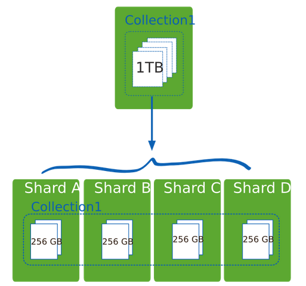
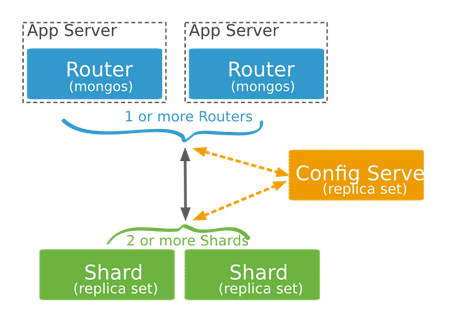
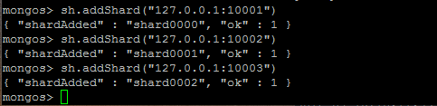

0x00 前言
MongoDB分布式集群搭建比较容易实现，为了优化项目的性能，实战并记录一下过程，更多信息参考官方文档
0x01 原理介绍
1.1水平扩展和垂直扩展
1.水平扩展也叫横向扩展，通过提高CPU、内存的能力。（比方：钢铁侠抬起一辆车）
2.垂直扩展也叫纵向扩展或者分片（shard）,通过分割数据到不同的服务器，利用多台低存储、低内存的机器共同完成大数据的处理。（比方：十个人抬起一辆车）
如果有1T的数据需要存储，可以通过买1T的硬盘，实现单服务器存储，也可以通过4台256G硬盘的服务器实现分布式存储，如下图：

1.2mongodb集群组件

1.分片（shard）:是一个单独的mongod服务器或者复制集，存储集群的部分数据。
2.路由（mongos）根据应用请求分发读写请求信息到各个分片
3.配置服务器（config server）:存储数据分片信息，配置服务器如果宕机，整个集群处于不可用状态。
注:生产环境中，为了提高容错能力和抗灾能力，配置服务器应该为复制集且为多台、mongos也应对于两台、分片均采用复制集
0x02 搭建实战
此次集群搭建实战基于一台主机之上，原理和多台主句上搭建一样。多台主机搭建要求分片服务器与配置服务器和mongos能相互访问。可参考官方快速部署
2.1环境与系统框架图
2.1.1搭建环境
Ubuntu 14.04
MongoDB 3.2.6
注:3.2.6修复了3.2.5及以前版本的shards 大数据分片“30 second network timeout”的bug
2.1.2系统框架图

2.2建立数据库目录
1 |
|
2.3启动分片和config server
1 | mongod --port 10001 --dbpath /data/db1& |
注：笔者在某教材上看到：“–configsvr设置端口为27017，数据位置为/data/configdb 可以用–port 27019 –dbpath /data/configdb代替”，然而使用后者连接mongos，查看sh.status()会报如下错误

亲测这个报错问题可以mongo连接配置服务器执行sh.status()解决，不过最好还是使用官方”–configsvr”吧！
2.4启动mongos
开启一个新的窗口，由于mongos需要读取配置服务器的信息，配置服务器一定要在mongos之前运行1
2#连接配置服务器，config server默认监听27019端口，mongos默认监听27017端口
mongos --configdb 127.0.0.1:27019
2.5配置集群
再开启一个新的窗口
2.5.1连接mongos
1 | #服务器上运行mongo默认连接127.0.0.1:27017 |
2.5.2添加分片
1 | sh.addShard("127.0.0.1:10001") |
如下图：

2.5.3数据分片
（1）启用数据库的分片1
sh.enableSharding("test")
（2）对集合数据分片1
2
sh.shardCollection("test.student",{"username":1})
2.5.4集群状态监控
1 | 连接mongos |
可以获得分片的信息，如图：

至此，一个单机版的mongodb集群搭建完毕，应用连接mongos可以按照操作普通mongod的方式操作mongos,从而进行备份恢复数据库、数据插入和获取等。
0x03 集群的其他操作
3.1 从集群中删除分片
3.1.1连接到mongos
1 | mongo |
立刻得到如下信息1
2
3
4
5
6{
"msg" : "draining started successfully",
"state" : "started",
"shard" : "shard000",
"ok" : 1
}
但是分片删除操作没有完成，需要将删除分片上的所有数据迁移到其他的分片，可能会花费很长的时间（如果只有最后一个分片，禁止删除分片操作）
此时如果尝试删除其他分片，例如：执行db.runCommand( { removeShard: "shard001" } )会报错，提示不能同时删除多个分片1
2
3"ok" : 0,
"errmsg" : "Can't have more than one draining shard at a time",
"code" : 117
3.1.2一段时间之后，运行db.runCommand( { removeShard: "shard000" } )检查数据迁移状态，返回如下
1 | { |
其中的remainning是必须迁移到其他分片剩余的数据块（chunks）和这个分片上未分片（primary）的数据库数量
3.1.3直到chunks为零以后，将未分片的数据迁移到其他分片(可能会花费一定的时间)，倘若该数据库没用也可直接删除
1 | db.runCommand( { movePrimary: "test_admin", to: "shard0001" }) |
迁移成功后返回如下：1
{ "primary" : "shard0001:127.0.0.1:100002", "ok" : 1 }
3.1.4完成上一步之后再次执行db.runCommand( { removeShard: "shard000" } ),得到如下返回即为成功删除该分片
1 | { |
3.2均衡器配置
3.2.1均衡器的操作
由于均衡器工作时会影响性能，通常在操作前关闭均衡器，操作之后再开启均衡器（备份期间要保证均衡过程一定不能运行）
1.查看均衡器状态：sh.getBalancerState()
2.开启均衡器：sh.setBalancerState(true)
3.关闭均衡器：sh.setBalancerState(false)或者sh.stopBalancer()
3.2.2检查均衡锁的状态
连接mongos,切换到config库，执行命令，过程如下（也可以通过sh.status()的balancer字段判断）1
2
3mongo
use config
db.locks.find( { _id : "balancer" } ).pretty()
返回如下信息1
2
3
4
5
6
7
8
9{
"_id" : "balancer",
"state" : 0,
"who" : "localhost:27017:1469031212:1501674588:Balancer:1603386966",
"ts" : ObjectId("578fde70a8fc7b3ad5b2635d"),
"process" : "localhost:27017:1469031212:1501674588",
"when" : ISODate("2016-07-20T20:26:24.238Z"),
"why" : "doing balance round"
}
其中state 值为0表明不存在锁；在mongos2.0以后版本,值为2表明存在锁,之前的版本,值为 1 表明存在锁